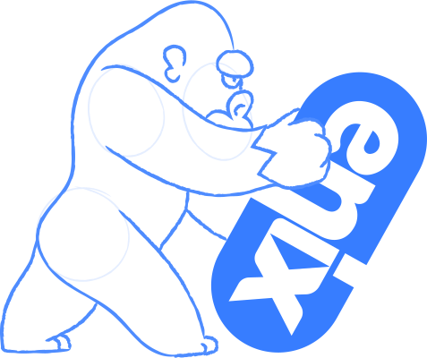
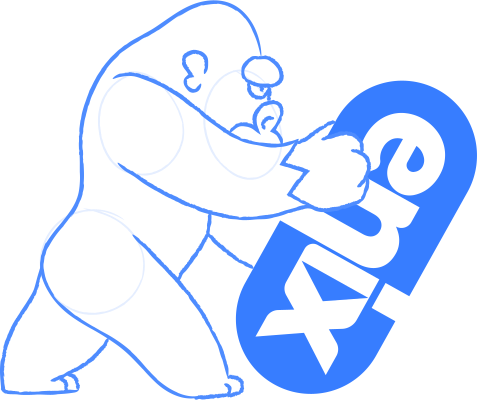
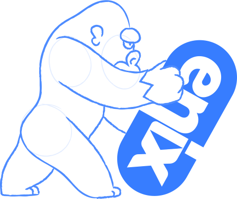
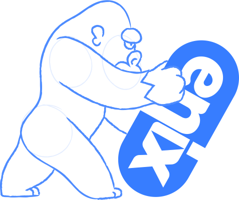
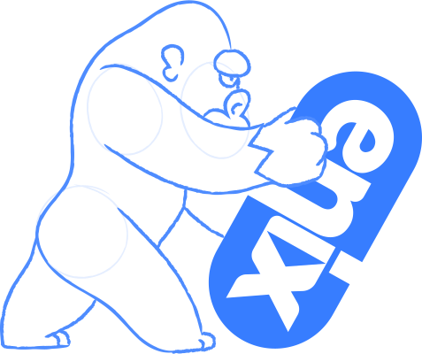

Labels
FDI-DOKR Video lesson
# What are labels? - <span class="fragment">**Arbitrary metadata** attachment on docker objects</span> - <span class="fragment">**Key-value** pairs</span> - <span class="fragment">**Specified** on container creation</span> - <span class="fragment">**Inherited** from images</span>
# What are they for? - <span class="fragment">Organization</span> - <span class="fragment">Licensing</span> - <span class="fragment">Scripting and automation</span> - <span class="fragment">Ownership/maintainer/who to contact in case of outage.</span>
# Automation - <span class="fragment">HTTP vhost of a web service</span> - <span class="fragment">Backup schedule</span>
# Adding labels to containers ```bash docker run -d -l owner=alice nginx docker run -d -l owner=bob nginx docker run -d -l owner nginx ```
# Querying ```bash docker inspect $(docker ps -lq) | grep -A3 Labels ``` ```json "Labels": { "maintainer": "NGINX Docker Maintainers docker-maint@nginx.com", "owner": "" }, ```
# Querying with format ```bash docker inspect $(docker ps -q) --format 'OWNER={{.Config.Labels.owner}}' ```
# Filter containers ```bash docker ps --filter label=owner docker ps --filter label=owner=alice docker ps --filter label=owner=alice -q ```
# Conclusion - <span class="fragment">How to use labels.</span> - <span class="fragment">What to do with them.</span> - <span class="fragment">Note that labels aren't limited to images and containers.</span>



 



 
